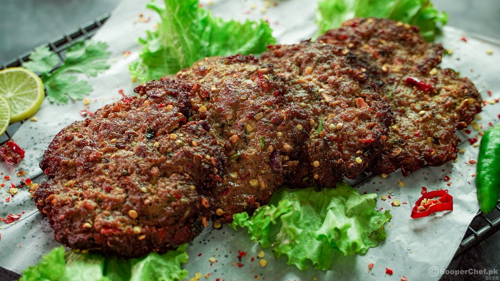

Chapli Kebab or Chapli Kabab (Pashto: چپلي کباب)[α][β] is a Pashtun-style minced kebab, usually made from ground beef, mutton or chicken with various spices in the shape of a patty. The Chapli Kabab originates from Peshawar in Pakistan.[1][7][3][8] The Peshawari Chapli Kabab is made with beef and is a popular street food throughout South Asia, including Pakistan, India, Afghanistan and Bangladesh.
In India, Chapli Kabab can be found as street food in the cities of Bhopal, Lucknow, Delhi and Hyderabad; where Muslims have a denser population.
Chapli Kababs are broadly consumed in Dhaka, Bangladesh. But it is most popular during the time of Eid-ul Azha and in ramadan as part of iftar.
Chapli Kababs can be served and eaten hot with naan or as a bun kebab.
Back to Home